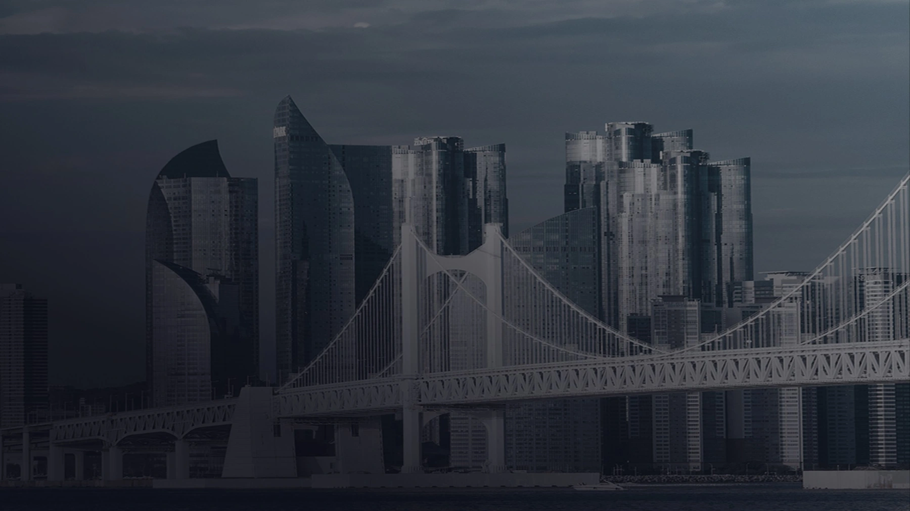
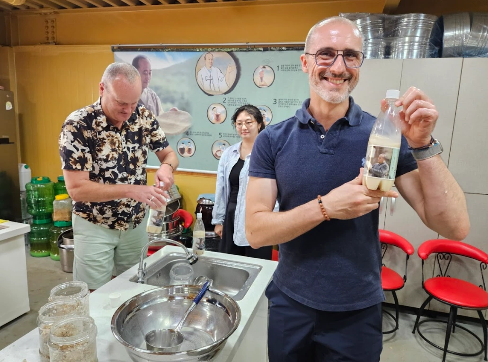

SÉLECTION DE VOYAGES JSB
Busan, Ulsan et Gyeongsang : des voyages sur mesure à vivre ensemble Le littoral de Busan, les forêts d’Ulsan, le patrimoine du Gyeongsang
Découvrir nos voyages ↗ 
ADRESSES LOCALES ✳
Un voyage qui commence sur la côte de Busan BONJOUR, ↗ TROUVEZ VOTRE PROCHAINE SCÈNE ✳ VOYAGEZ AVEC JSB ✳ TROUVEZ VOTRE PROCHAINE SCÈNE
TRAVART × JSB
Escapades faciles, six façons de découvrir la région Six excursions d’une demi-journée ou d’une journée à Busan, Gyeongju et Ulsan. Cliquez sur une offre pour consulter le programme et les conditions à jour sur sa page de réservation TRAVART
Vérifiez les jours de départ, les tarifs et l’ordre des visites sur la page TRAVART de l’offre au moment de réserver
LA COLLECTION DE VOYAGES
Où souhaitez-vous partir ? Recherchez un voyage par région ou par lieu de visite
Tous les voyages 04 Bien-être et détente Histoire et culture
4 voyages
Aucun voyage ne correspond à vos critères Essayez une autre région ou un autre lieu, ou réinitialisez la recherche et les filtres
Voir tous les voyages Cochez « Ajouter au comparatif » sur deux offres pour voir côte à côte leur durée, leurs régions et leur programme
0 voyage sélectionné
Tout désélectionner Comparer 2 voyages
Comparatif
Comparez deux voyages côte à côte × Programmes proposés pour un échange sur mesure. Tarifs, prestations incluses et dates de départ sont communiqués après consultation
Circuit bleisure & bien-être Ulsan-Busan Durée 5 jours / 4 nuits Région Ulsan · Busan Temps forts par jour Jour 1 · Forêts et mer d’Ulsan Aéroport de Gimhae → Ulsan → Forêt thérapeutique nationale de Daeunsan → Parc Daewangam · pont suspendu → Observatoire du pont d’Ulsan Jour 2 · Histoires de baleines et de poteries onggi Île de Seuldo → Village culturel de la baleine de Jangsaengpo → Village des poteries onggi d’Oegosan · musée de l’onggi Jour 3 · Culture et littoral de Busan Village culturel de Huinnyeoul → Musée d’histoire moderne et contemporaine de Busan → Train côtier (Beach Train) → Observatoire Daritdol de Cheongsapo → Club D Oasis Jour 4 · Une journée à Busan Temple Haedong Yonggungsa → Plage de Songjeong · café avec vue sur la mer → Millac The Market · Podium Dive → Marché de Haeundae Jour 5 · En attendant de se revoir Départ de l’hôtel → Aéroport de Gimhae Voir le programme détaillé ↗ Se renseigner sur ce voyage ↗ Circuit histoire et culture du Gyeongbuk Durée Itinéraire de 6 jours Région Andong · Goryeong · Gyeongju Temps forts par jour Jour 1 · Paysages d’Andong Village de Hahoe → Académie Dosan Seowon → Pont Woryeonggyo Jour 2 · Temple paisible Temple Bongjeongsa Jour 3 · Au temps de Daegaya Village Gayatgo → Tumulus de Jisan-dong → Musée de Daegaya Jour 4 · La beauté ancienne de Gyeongju Temple Bulguksa → Grotte de Seokguram → Rue Hwangnidan-gil Jour 5 · Gyeongju, du jour à la nuit Tombe Cheonmachong → Musée national de Gyeongju → Palais Donggung et étang Wolji → Village Gyochon → Pont Woljeonggyo Jour 6 · Fin du voyage Transfert à l’aéroport · départ Voir le programme détaillé ↗ Se renseigner sur ce voyage ↗ Circuit K-drama du Gyeongbuk Durée Itinéraire de 5 jours Région Mungyeong · Yecheon · Pohang · Gyeongju Temps forts par jour Jour 1 · Une histoire qui commence à Mungyeong Studios en plein air de Mungyeong Saejae → Vélorail Jour 2 · De Yecheon à Pohang Hoeryongpo → Homigot Jour 3 · Pohang, décor de K-dramas Rue des maisons japonaises de Guryongpo → Marché Gongjin de Cheongha → Space Walk Jour 4 · Gyeongju, hier et aujourd’hui Temple Bulguksa → Lac Bomun → Daereungwon → Rue Hwangnidan-gil → Palais Donggung et étang Wolji Jour 5 · Fin du voyage Transfert à l’aéroport · départ Voir le programme détaillé ↗ Se renseigner sur ce voyage ↗ Circuit Harmonize Durée 5 jours / 4 nuits Région Sancheong · Hapcheon · Hadong · Busan Temps forts par jour Jour 1 · Pause à Sancheong Temple Suseonsa → Village Donguibogam Jour 2 · Moments à Hapcheon et Hadong Parc à thème cinématographique de Hapcheon → Temple Haeinsa → Jardin de thé Maeam Jour 3 · Les couleurs de Busan Arte Museum → Village culturel de Gamcheon Jour 4 · Le long du littoral de Busan Temple Haedong Yonggungsa → Lotte Premium Outlets → Observatoire Daritdol de Cheongsapo → Gwangalli Jour 5 · Fin du voyage Départ de l’aéroport de Gimhae Voir le programme détaillé ↗ Se renseigner sur ce voyage ↗ Les offres présentées sont des programmes proposés pour un échange sur mesure. Programme et tarifs sont communiqués séparément selon vos dates et le nombre de participants
INFORMATIONS VOYAGE JSB
Panneau d’information voyage Choisissez un voyage, puis le jour qui vous intéresse
Renseignements · INFORMATION · JSB TOUR & MICE Renseignements · INFORMATION · JSB TOUR & MICE Renseignements · INFORMATION · JSB TOUR & MICE
Visites jour par jour PROGRAMME JOUR PAR JOUR
Voir le programme Ulsan · Busan · 5 jours / 4 nuits
Circuit bleisure & bien-être Ulsan-Busan ✳ JOUR 01 Jour 1JOUR 02 Jour 2JOUR 03 Jour 3JOUR 04 Jour 4JOUR 05 Jour 5
JOUR 01 / 05
Forêts et mer d’Ulsan 5 étapes (visites et transferts) N° Lieu Type
01 Aéroport de Gimhae Transfert 02 Ulsan Visite 03 Forêt thérapeutique nationale de Daeunsan Visite 04 Parc Daewangam · pont suspendu Visite 05 Observatoire du pont d’Ulsan Visite JOUR 02 / 05
Histoires de baleines et de poteries onggi 3 étapes (visites et transferts) N° Lieu Type
01 Île de Seuldo Visite 02 Village culturel de la baleine de Jangsaengpo Visite 03 Village des poteries onggi d’Oegosan · musée de l’onggi Visite JOUR 03 / 05
Culture et littoral de Busan 5 étapes (visites et transferts) N° Lieu Type
01 Village culturel de Huinnyeoul Visite 02 Musée d’histoire moderne et contemporaine de Busan Visite 03 Train côtier (Beach Train) Visite 04 Observatoire Daritdol de Cheongsapo Visite 05 Club D Oasis Visite JOUR 04 / 05
Une journée à Busan 4 étapes (visites et transferts) N° Lieu Type
01 Temple Haedong Yonggungsa Visite 02 Plage de Songjeong · café avec vue sur la mer Visite 03 Millac The Market · Podium Dive Visite 04 Marché de Haeundae Visite JOUR 05 / 05
En attendant de se revoir 2 étapes (visites et transferts) N° Lieu Type
01 Départ de l’hôtel Transfert 02 Aéroport de Gimhae Transfert Andong · Goryeong · Gyeongju · Itinéraire de 6 jours
Circuit histoire et culture du Gyeongbuk ✳ JOUR 01 Jour 1JOUR 02 Jour 2JOUR 03 Jour 3JOUR 04 Jour 4JOUR 05 Jour 5JOUR 06 Jour 6
JOUR 01 / 06
Paysages d’Andong 3 étapes (visites et transferts) N° Lieu Type
01 Village de Hahoe Visite 02 Académie Dosan Seowon Visite 03 Pont Woryeonggyo Visite JOUR 02 / 06
Temple paisible 1 étape (visite ou transfert) N° Lieu Type
01 Temple Bongjeongsa Visite JOUR 03 / 06
Au temps de Daegaya 3 étapes (visites et transferts) N° Lieu Type
01 Village Gayatgo Visite 02 Tumulus de Jisan-dong Visite 03 Musée de Daegaya Visite JOUR 04 / 06
La beauté ancienne de Gyeongju 3 étapes (visites et transferts) N° Lieu Type
01 Temple Bulguksa Visite 02 Grotte de Seokguram Visite 03 Rue Hwangnidan-gil Visite JOUR 05 / 06
Gyeongju, du jour à la nuit 5 étapes (visites et transferts) N° Lieu Type
01 Tombe Cheonmachong Visite 02 Musée national de Gyeongju Visite 03 Palais Donggung et étang Wolji Visite 04 Village Gyochon Visite 05 Pont Woljeonggyo Visite JOUR 06 / 06
Fin du voyage 1 étape (visite ou transfert) N° Lieu Type
01 Transfert à l’aéroport · départ Transfert Mungyeong · Yecheon · Pohang · Gyeongju · Itinéraire de 5 jours
Circuit K-drama du Gyeongbuk ✳ JOUR 01 Jour 1JOUR 02 Jour 2JOUR 03 Jour 3JOUR 04 Jour 4JOUR 05 Jour 5
JOUR 01 / 05
Une histoire qui commence à Mungyeong 2 étapes (visites et transferts) N° Lieu Type
01 Studios en plein air de Mungyeong Saejae Visite 02 Vélorail Visite JOUR 02 / 05
De Yecheon à Pohang 2 étapes (visites et transferts) N° Lieu Type
01 Hoeryongpo Visite 02 Homigot Visite JOUR 03 / 05
Pohang, décor de K-dramas 3 étapes (visites et transferts) N° Lieu Type
01 Rue des maisons japonaises de Guryongpo Visite 02 Marché Gongjin de Cheongha Visite 03 Space Walk Visite JOUR 04 / 05
Gyeongju, hier et aujourd’hui 5 étapes (visites et transferts) N° Lieu Type
01 Temple Bulguksa Visite 02 Lac Bomun Visite 03 Daereungwon Visite 04 Rue Hwangnidan-gil Visite 05 Palais Donggung et étang Wolji Visite JOUR 05 / 05
Fin du voyage 1 étape (visite ou transfert) N° Lieu Type
01 Transfert à l’aéroport · départ Transfert Sancheong · Hapcheon · Hadong · Busan · 5 jours / 4 nuits
Circuit Harmonize ✳ JOUR 01 Jour 1JOUR 02 Jour 2JOUR 03 Jour 3JOUR 04 Jour 4JOUR 05 Jour 5
JOUR 01 / 05
Pause à Sancheong 2 étapes (visites et transferts) N° Lieu Type
01 Temple Suseonsa Visite 02 Village Donguibogam Visite JOUR 02 / 05
Moments à Hapcheon et Hadong 3 étapes (visites et transferts) N° Lieu Type
01 Parc à thème cinématographique de Hapcheon Visite 02 Temple Haeinsa Visite 03 Jardin de thé Maeam Visite JOUR 03 / 05
Les couleurs de Busan 2 étapes (visites et transferts) N° Lieu Type
01 Arte Museum Visite 02 Village culturel de Gamcheon Visite JOUR 04 / 05
Le long du littoral de Busan 4 étapes (visites et transferts) N° Lieu Type
01 Temple Haedong Yonggungsa Visite 02 Lotte Premium Outlets Visite 03 Observatoire Daritdol de Cheongsapo Visite 04 Gwangalli Visite JOUR 05 / 05
Fin du voyage 1 étape (visite ou transfert) N° Lieu Type
01 Départ de l’aéroport de Gimhae Transfert
Schéma de l’itinéraire proposé, et non une carte réelle. L’ordre des visites et leur disponibilité sont confirmés après consultation
Voir les événements et voyages réels de JSB ↗ 
EXPÉRIENCES LOCALES Document JSB · photo de référence, atelier de cuisine coréenne
PLUS QU’UNE DESTINATION
Explorer la région, vivre sa culture De l’atelier de cuisine coréenne à la découverte de l’histoire et de la culture
Demander le voyage qui me convient ↗ JSB À VOTRE MESURE
Régions, participants, dates souhaitées : dites-nous tout Il suffit de nous indiquer où vous voulez aller et combien vous serez
Demander un voyage sur mesure ↗ ✳